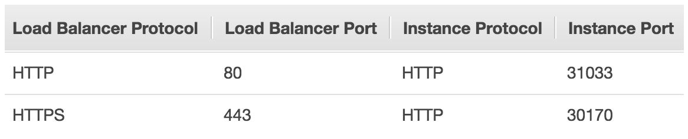

Apr 5, 2018
Recently, I've been creating a lot of both internal and internet-facing LoadBalancer Services as this is a great way to expose your cluster to traffic. When doing this on AWS, unless specified otherwise, Kubernetes will automatically create a Classic Load Balancer and attach the relevant instances.
However, this got me thinking about duplicate ports on the same node assigned to different ELBs. How would Kubernetes handle this?
What actually happens when we set a Service type to LoadBalancer is Kubernetes will also expose a NodePort for each of the ports specified in the service.
...the Kubernetes master will allocate a port from a flag-configured range (default: 30000-32767), and each Node will proxy that port (the same port number on every Node) into your Service...
For example, if I were to apply the following YAML:
apiVersion: v1
kind: Service
metadata:
name: my-service
annotations:
service.beta.kubernetes.io/aws-load-balancer-ssl-cert: [AWS ARN]
service.beta.kubernetes.io/aws-load-balancer-ssl-ports: "443"
spec:
ports:
- name: http
protocol: TCP
port: 80
targetPort: 6000
- name: https
protocol: TCP
port: 443
targetPort: 6000
type: LoadBalancer
selector:
name: my-serviceI would see something like this in the AWS Console:
AWS Console: Load Balancer Listeners
Although it is possible to configure these ports manually by specifying spec.ports[*].nodePort, Kubernetes will automatically check the current in-use node ports and only assign one that is available.